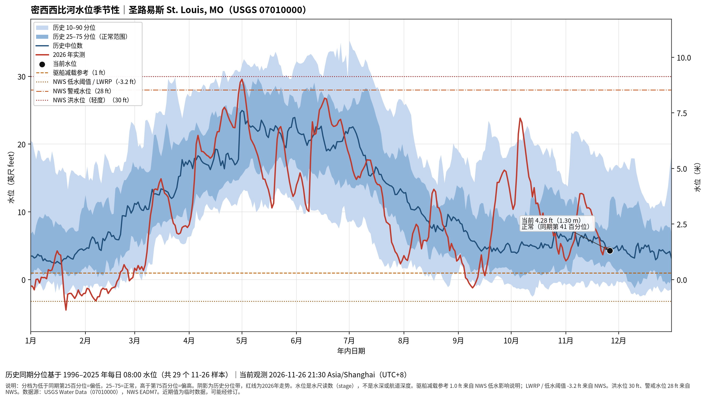
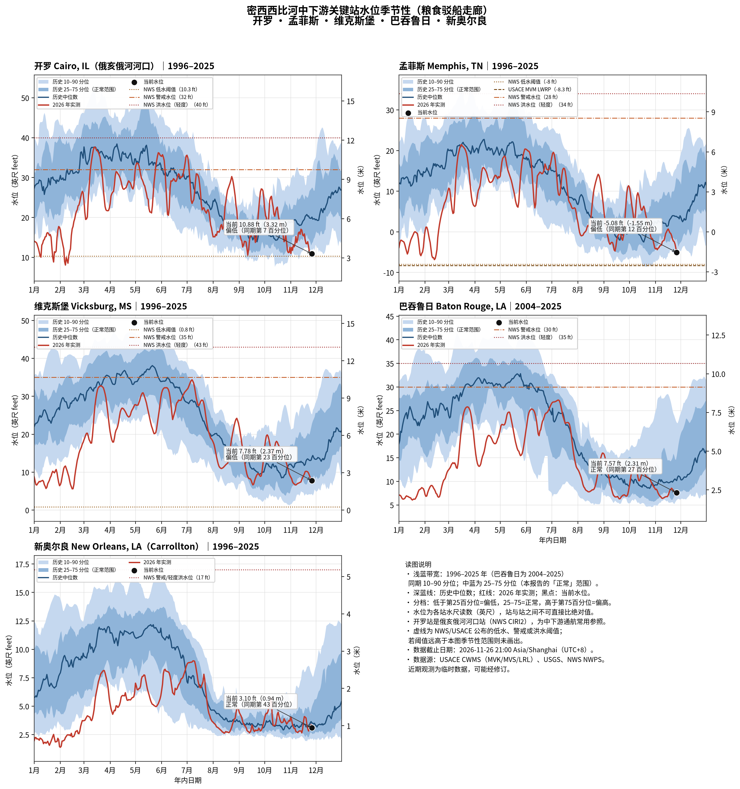

粮食驳船走廊 · 水位季节性
圣路易斯及开罗、孟菲斯、维克斯堡、巴吞鲁日、新奥尔良关键站。观测时间均为 Asia/Shanghai（UTC+8）。数据截至 2026-11-26。
整条河不是同一状态。开罗—孟菲斯—维克斯堡中下游季节性偏低；圣路易斯以及更下游的巴吞鲁日、新奥尔良为季节性正常（巴吞鲁日贴近正常下限）。
对粮食驳船更紧的是两端走势：开罗当前最紧，仅比 NWS 低水阈值 10.3 ft 高约 0.58 ft（预报约一周内回升）；圣路易斯当前仍属正常、高于 1.0 ft 减载参考，但 NWS 预报未来约 10 天可能降至 1.0 ft 以下。
分档依据各站「当日」（11-26）历史同期样本：低于第 25 百分位为偏低，25–75 为正常，高于第 75 百分位为偏高。水位是水尺读数（stage，英尺），不是水深或 9 英尺航道深度；站与站之间不可直接比绝对值。
| 站点 | 当前水位 | 判断 | 同期对照（11-26） | 关键阈值 | 观测时间 |
|---|---|---|---|---|---|
| 圣路易斯St. Louis, MO · USGS 07010000 / NWS EADM7 | 4.28 ft1.30 m | 正常第 41 百分位 | 中位数 4.74 ftP25–P75：2.62–11.59 ft 1996–2025，缺 2011 年，29 个样本 |
减载参考 1.0 ftLWRP / 低水阈值 -3.2 ft 警戒 28 ft · 洪水位 30 ft 距减载参考仍约 3.3 ft |
2026-11-26 21:30Asia/Shanghai（UTC+8） USGS 瞬时值（07:30 CST）；同日 07:00 CST / NWS 为 4.34 ft |
| 开罗Cairo, IL · 俄亥俄河河口 · NWS CIRI2 | 10.88 ft3.32 m | 偏低第 6.7 百分位 接近低水阈值 |
中位数 20.08 ftP25–P75：13.60–27.54 ft 1996–2025，30 个样本 |
NWS 低水阈值 10.3 ft仅高约 0.58 ft 警戒 32 ft · 洪水位 40 ft |
2026-11-26 21:00Asia/Shanghai（UTC+8） NWS CIRI2 |
| 孟菲斯Memphis, TN · NWS MEMT1 | -5.08 ft-1.55 m | 偏低第 11.7 百分位 | 中位数 3.77 ftP25–P75：-1.88–13.36 ft 1996–2025，30 个样本 负值由水尺零点设定所致，属该站常态 |
NWS 低水阈值 -8.0 ftUSACE LWRP -8.3 ft 仍高约 2.9 / 3.2 ft 警戒 28 ft · 洪水位 34 ft |
2026-11-26 21:00Asia/Shanghai（UTC+8） NWS MEMT1 |
| 维克斯堡Vicksburg, MS · NWS VCKM6 | 7.78 ft2.37 m | 偏低第 23.3 百分位 接近正常边界 |
中位数 13.91 ftP25–P75：8.66–22.86 ft 1996–2025，30 个样本 仅比 P25 低约 0.9 ft |
NWS 低水阈值 0.8 ft仍高约 7.0 ft 警戒 35 ft · 洪水位 43 ft |
2026-11-26 21:00Asia/Shanghai（UTC+8） NWS VCKM6 |
| 巴吞鲁日Baton Rouge, LA · USGS 07374000 / NWS BTRL1 | 7.57 ft2.31 m | 正常第 27.3 百分位 贴近正常下限 |
中位数 10.17 ftP25–P75：7.28–15.45 ft 2004–2025，22 个样本 （1998–2003 日均值基本缺失） |
NWS 未公布低水阈值警戒 30 ft · 洪水位 35 ft NWS 同期读数约低 0.3 ft，本页以 USGS 为准 |
2026-11-26 21:15Asia/Shanghai（UTC+8） USGS 15 分钟瞬时值 |
| 新奥尔良New Orleans, LA（Carrollton）· NWS NORL1 | 3.10 ft0.94 m | 正常第 43.3 百分位 | 中位数 3.52 ftP25–P75：2.60–4.99 ft 1996–2025，30 个样本 日值由小时序列平均；下游有潮汐影响 |
NWS 未公布低水阈值警戒 / 轻度洪水位均为 17.0 ft | 2026-11-26 20:00Asia/Shanghai（UTC+8） NWS NORL1 |
粮食驳船常用参照站。浅蓝为 1996–2025 年同期 10–90 分位，中蓝为 25–75 分位（本页的「正常」范围），深蓝线为历史中位数，红线为 2026 年实测，黑点为当前水位。水平线为 NWS 公布的减载参考、低水阈值与警戒 / 洪水位。

开罗官方通航参照是俄亥俄河河口站（NWS CIRI2），不是密西西比河干流站。巴吞鲁日气候态因数据缺口实际为 2004–2025 年。

气候态统一用 1996–2025 年（圣路易斯缺 2011-11-26，当日 29 个样本）。巴吞鲁日 USGS 日平均在 1998–2003 年基本缺失，实际为 2004–2025（22 年）。
近期 USGS / NWS / USACE 观测均为临时数据，事后可能修订。圣路易斯当前点是 07:30 CST 瞬时值，历史分位基于每日 08:00，口径非常接近但不完全相同。本页不替代官方航道通告。